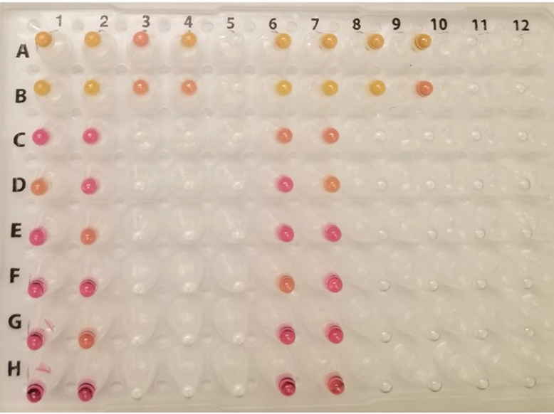
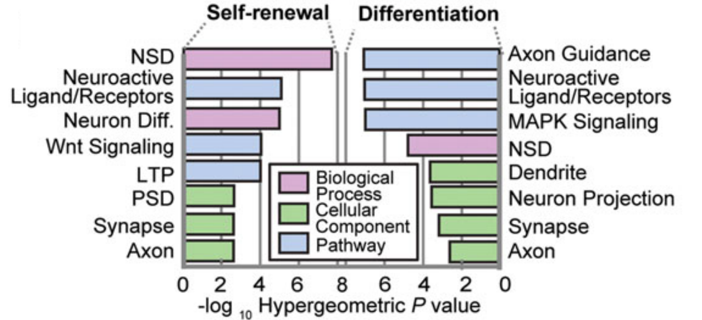
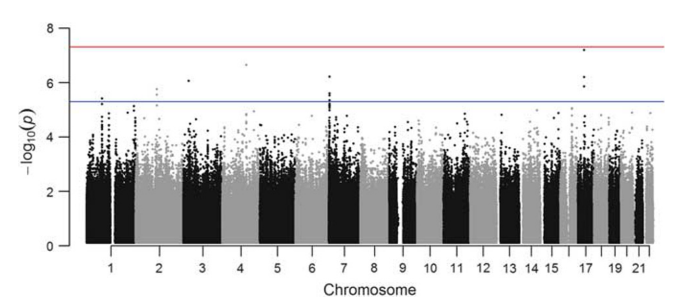

I am a highly creative scientist optimistic about using new technologies to improve human health. I am currently a Senior Scientist in Functional Genomics at Lyterian Therapeutics. Prior to this, I was an Instructor at the Seaver Autism Center at the Icahn School of Medicine.
My research focus is applying novel technologies to dissect pathways dysregulated in neurological disorders using human brain cells. My long-term goal is to implement high-throughput functional genomics approaches to elucidate causal mechanisms for neurological disorders that can inform future therapeutics.
My research focus is applying novel technologies to dissect pathways dysregulated in neurological disorders using human brain cells. My long-term goal is to implement high-throughput functional genomics approaches to elucidate causal mechanisms for neurological disorders that can inform future therapeutics.
Select First Author Publications

Measuring transcription factor binding and gene expression using barcoded self-reporting transposon calling cards and transcriptomes
In submission 2022

Rapid and extraction-free detection of SARS-CoV-2 from saliva by colorimetric reverse-transcription loop-mediated isothermal amplification
Clinical Chemistry 2021

High-throughput single-cell functional elucidation of neurodevelopmental disease–associated genes reveals convergent mechanisms altering neuronal differentiation
Genome Research 2020

Haploinsufficiency of BAZ1B contributes to Williams syndrome through transcriptional dysregulation of neurodevelopmental pathways
Human Molecular Genetics 2016

Whole-genome sequencing suggests a chemokine gene cluster that modifies age at onset in familial Alzheimer's disease
Molecular Psychiatry 2015
Research Projects
CRISPRi of ASD risk genes in iPSC neurons
Combining CRISPRi with scRNA-seq enables high-throughput perturbation of disease-associated genes coupled to transcriptional readout. We recently implemented this approach as a rapid and powerful method to study the loss of function of many ASD risk genes simultaneously in human neurons. In ongoing work, we are performing a large-scale perturbation of multiple ASD genes in iPSC-derived neural progenitors cells and neurons. This project will improve our knowledge of ASD gene mechanisms, pinpoint commonly disrupted pathways, and nominate therapeutic drug candidates.

Barcoded Calling Cards and Gene Expression
Understanding where transcription factors (TFs) and other gene expression regulators bind in the genome and how they orchestrate gene expression is a central goal in genomics. We have recently developed a novel, rapid, and affordable method called barcoded self-reporting transposon calling cards to simultaneously identify the genomic binding sites of TFs and the functional consequences of binding on gene expression. A significant proportion of causative genes in ASD are transcriptional regulators. We are using barcoded calling cards to map the binding sites of these factors in human neural cells relevant to ASD pathogenesis.

Pooled Optical Screening of CRISPR Perturbations in Neurons
Nerve cells extend long, branched projections called axons and dendrites (collectively termed neurites) and communicate using synapses at these projections. Synaptic proteins and other genes involved in neuronal communication are commonly disrupted in individuals with ASD and other neurodevelopmental disorders. We are developing a novel method called POINT-MAP to perform Pooled Optical Imaging, Neurite Tracing, and Morphometry Across Perturbations. This technology will enable high-throughput evaluation of the contributions of NDD risk genes on neuronal and synaptic morphology.